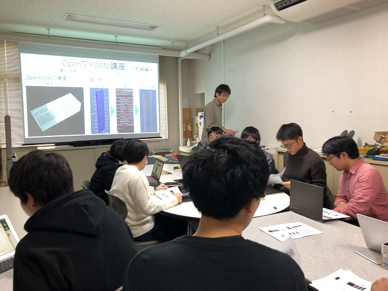
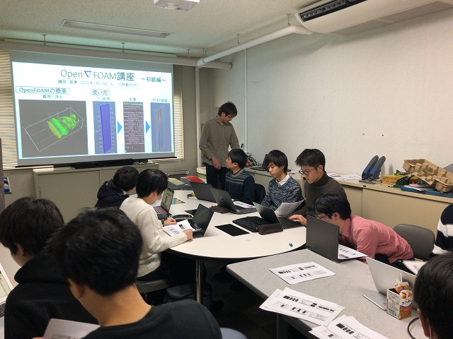
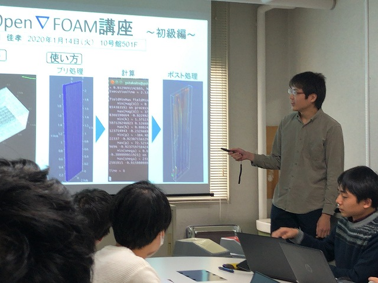
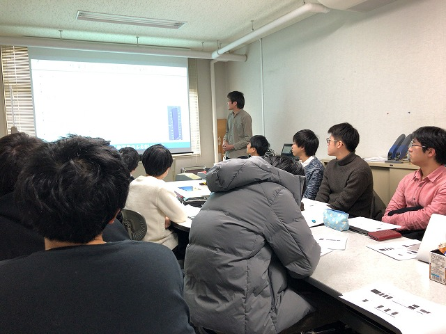
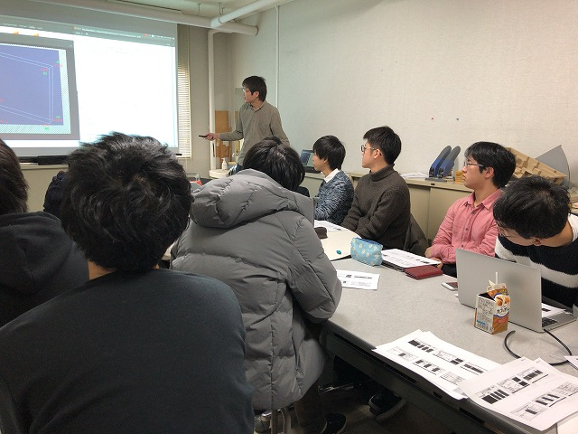
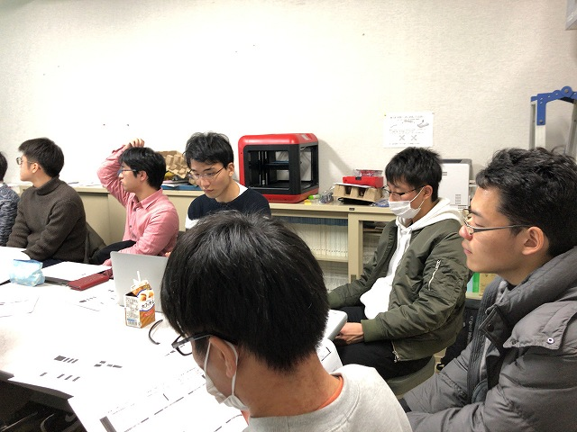

| ・ OpenFOAM講座 (R02.01.14) | |||
夏のGPU講座から今回は数値流体計算ソルバーのOpenFOAM講座です。講師はM1I田さん。 各学年に1人くらい利用者が居て、興味ある人も増えているこの頃なので開催になりました。OpenFOAMはC++の偏微分方程式ソルバー開発用クラスライブラリです。 なので、GUIとかないので手順が多めです。今回は基本的な使い方を講習して貰いました。 |
|||
|

B3も参加です |

I田さんが後で資料配ります | ||
|

メッシュ切ってから後処理まで |

へー | ||
|

手続きおおい |

必要になればできるようになります | ||